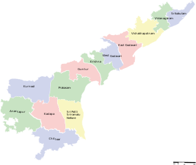

Andhra Pradesh, located in the southeastern part of India,
is known for its rich cultural heritage, historical landmarks, and diverse landscapes.
The state features a variety of terrains, from the scenic beaches of Visakhapatnam
to the lush hills of the Eastern Ghats and the expansive plains of the Krishna River.
Andhra Pradesh is renowned for its ancient temples, such as those in Tirupati and Amaravati,
which reflect its deep-rooted spiritual traditions and architectural splendor.
The state’s vibrant culture is showcased through its traditional dance forms, like Kuchipudi,
and its distinctive cuisine, which includes spicy and flavorful dishes.
With its blend of historical significance and natural beauty,
Andhra Pradesh offers a rich and varied experience for travelers.
|
 |